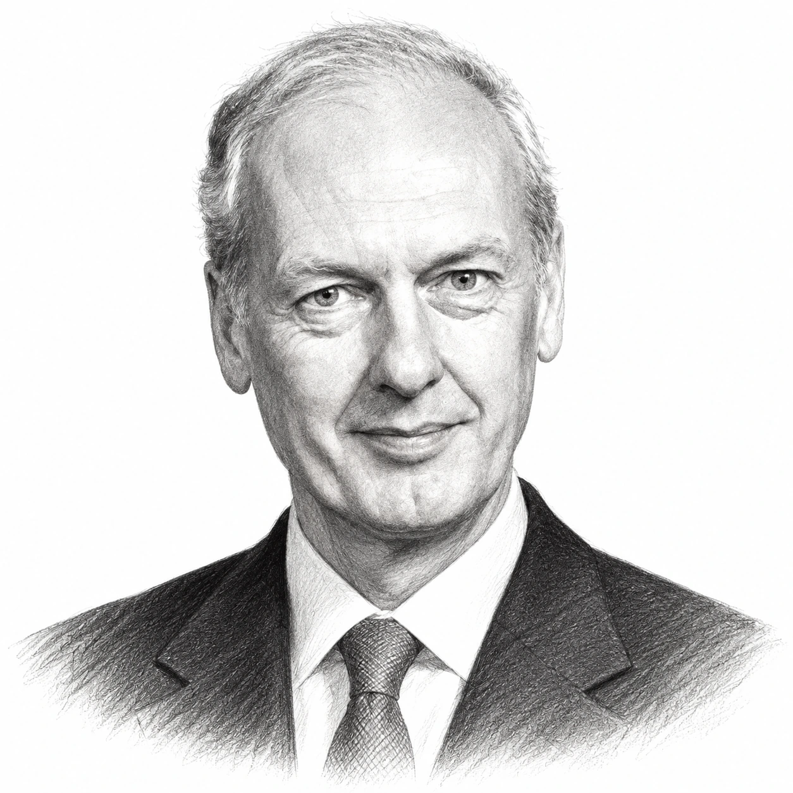
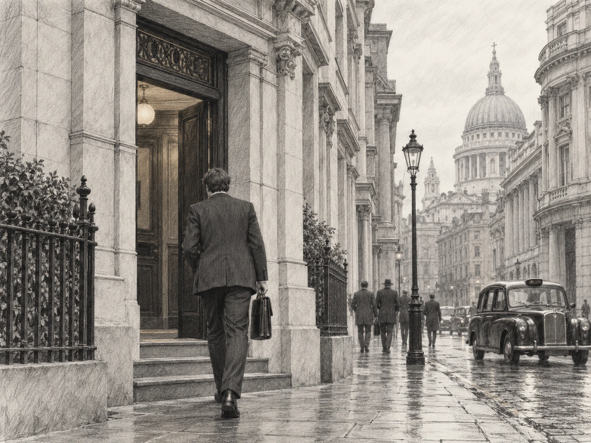

Anthony Bolton was born on 7 March 1950 and read engineering at Trinity College, Cambridge, where he also studied composition with the composer Nicholas Maw, so that the two interests that would occupy the rest of his life were both in place before he had settled on a career. Music stayed a private pursuit for the next thirty years, whereas investing became the job, and he arrived in the City in 1971 as a graduate trainee at Keyser Ullmann, a small merchant bank that mainly managed investment trusts.
He worked his way into the firm's investment department, but its routine did not suit him and he left before Keyser Ullmann ran into the difficulties that overtook it in the secondary banking crisis of the mid-1970s. In 1976 he moved to Schlesingers, a South African-owned investment firm in London, where he became a portfolio manager for the first time and helped to run a fund that invested in special situations, meaning companies going through a change that the market had not yet priced properly.
The decision that shaped his career came in 1979, when Fidelity, a privately owned American fund group that had never sold a fund in Britain, set up a London office to launch its first funds for UK investors and recruited the 29-year-old Anthony Bolton as one of its first two London-based investment managers. He joined on 17 December 1979, a few months after Margaret Thatcher's first election victory, and Fidelity Special Situations was launched the same month with him in charge of a fund that, by his own later account, started with roughly £2m.

The fund's name described what Anthony Bolton was looking for, because he purchased companies that were out of favour, recovering from problems, being reorganised or likely to be taken over, at a time when few other investors wanted them, and sold them once the rest of the market had come round to his view. "I've had a contrarian approach, but I've known that that's something that works for me," said Mr Bolton in a series of short videos recorded for Fidelity in 2016. "The dangerous thing I think, is to do what everyone else is doing." Jonathan Davis, who wrote a book about him, noted that he never used borrowing or derivatives to add to the fund's returns.
Two habits ran through the whole of his career, the first being to meet companies in large numbers, with Anthony Bolton keeping handwritten notes so that he could compare what a management team said with what it had told him at earlier meetings, because a story that kept changing was, in his experience, a warning in itself. The second was the use of share price charts as a check on his own fundamental view rather than as a forecast, and he wrote in his 2009 book that "one of the great disciplines of technical analysis is that it forces you to cut losses and let profits run". He also learned the hard way that "some of the worst mistakes I made was investing in companies with weak balance sheets".
From November 1985 Fidelity also gave him its European Fund, followed by the European Growth fund in 1990, the Fidelity European Values investment trust in 1991 and the Fidelity Special Values trust, which started with £44m in October 1994, so that for more than a decade he was running UK and European money at the same time. The record was not smooth, however, because he had three poor years around the recession of the early 1990s, when holdings in Polly Peck and Parkfield were caught up in the collapse of both companies, and at the end of that decade he declined to purchase internet shares and underperformed for a couple of years until the bubble burst in 2000. These were periods of underperformance within a long record rather than permanent losses, a distinction worth keeping when 28 years are reduced to a single compound rate.

Anthony Bolton was not normally a public campaigner, which made the events of October 2003 unusual. Carlton Communications and Granada were about to merge to form ITV plc, and Michael Green, the founder and chairman of Carlton, was to become chairman of the combined company. Fidelity, led by Anthony Bolton, assembled a group of institutions including Legal & General, Schroders, Standard Life Investments and UBS Global Asset Management, which between them held around 36% of Carlton and 33% of Granada, and demanded that Michael Green give up the role so that an independent chairman could be found from outside the two companies. Carlton's board refused and warned that a change of management could threaten the £4.2bn merger, but Granada's board withheld its support and within days Michael Green had agreed to step down from the ITV role. The episode earned Anthony Bolton the nickname of the quiet assassin, and he later told the journalist Ian Fraser that news of the campaign had been leaked by others, because in his view such efforts worked better behind the scenes.
By 2006 the fund had become the largest open-ended fund in Britain, holding around £6bn, and there was a widespread worry that it had become too big for the kind of smaller, unloved companies on which the record had been built. Fidelity's answer, announced in June 2006, was to split it, so that Anthony Bolton kept the UK half as Fidelity Special Situations until his planned retirement at the end of 2007, while the other half became Fidelity Global Special Situations in September 2006 under Jorma Korhonen, a Finnish manager at the firm. "Were I starting out today, I would be looking to run a global, not a UK Special Situations fund," said Mr Bolton at the time.
The record he left at the end of December 2007 is the one on which his reputation rests. Over the 28 years from launch, Fidelity Special Situations returned 19.5% a year, compounded, against around 13.5% a year for the FTSE All-Share index, so that £1,000 invested at launch had grown to roughly £147,000 by the time he stepped down, according to the Daily Telegraph's report that month. On the usual basis for unit trust figures, the fund's return is the one received after the fund's own charges with income reinvested and the index figure includes dividends, so the gap of around six percentage points a year is a fair measure of what he added. However, it is a record of the past and not a forecast, and it ends in December 2007, because the results of Sanjeev Shah, who took over in January 2008, and of Alex Wright, who has run the fund since January 2014, belong to them.
Anthony Bolton stayed at Fidelity after 2007 to mentor its younger managers and analysts, and in April 2009 he published "Investing Against the Tide", an account of how he had run money. The retirement did not last, however, because he had been investing in Chinese shares since 2004, and in November 2009 Fidelity announced that he would move to Hong Kong to run a new China fund. "I firmly believe that China is the investment opportunity of the next decade," said Mr Bolton. Fidelity China Special Situations, an investment trust rather than an open-ended fund, was launched on 19 April 2010 at 100p a share, with 460m shares in issue and net assets of £455.8m after the costs of the issue, one of the largest investment trust launches there had been. The shares went straight to a premium to net asset value, which is unusual for a trust, and a further issue of C shares raised £166.25m in February 2011.
The first year went well enough, because from launch to 31 March 2011 the net asset value per share returned 5.2% and the share price 10.0%, against 3.3% for the MSCI China index in sterling, whereas the second year did not. In the six months to 30 September 2011 the net asset value fell by 28.9%, against a fall of 24.5% in the index, and by November 2011 the shares were trading at 78p. "I can give no excuses except to say performance has been very disappointing," Mr Bolton told shareholders, adding that his optimism about China had been "severely tested". The portfolio was tilted towards smaller companies and consumer businesses, which lagged as China's economy slowed, and the trust was geared by between 20% and 25%, which magnified the falls, so that for the year to 31 March 2012 the net asset value returned −18.5% and the share price −26.4%, against −12.5% for the index. "I admit I am not where I had hoped to be," he wrote in that year's report.
He had always said the appointment was for a fixed term, and in April 2012 he extended it to April 2014, arguing that cutting gearing after a period of underperformance was "one of the worst mistakes" a manager could make because "you miss out on the rebound". The rebound did come, because the net asset value returned 15.7% in the year to 31 March 2013 and 19.5% in the year to 31 March 2014, the latter against a fall of 6.9% in the index, and by the time he handed the trust to Dale Nicholls on 1 April 2014 the net asset value had returned 18.6% since launch, against −5.7% for the MSCI China index. However, the share price had returned just 6.3% over the same period, because the shares had gone from a premium at launch to a discount of 9.6% at the end, so that a shareholder who had purchased at the start received around a third of what the portfolio itself had earned. When he announced his retirement in June 2013 he said that "I do not regret it at all", and in his final report he was more specific: "Perhaps my biggest mistake over the last four years has been my optimism about the overall Chinese stock market." The trust's later rise under Dale Nicholls is not part of Anthony Bolton's record.

Anthony Bolton served as a director of Fidelity International from 2014 to 2024, with the title of president of investments, and he has continued to speak about how he worked, telling an audience at the Library of Mistakes in Edinburgh in November 2024 that what separated a good manager from an average one was not the size of the winners but the avoidance of mistakes, and that the first question he asked of any idea was whether he was early or late.
Music, which had waited for thirty years, came to the fore after he resumed composition lessons in 2002 with Colin Matthews and Julian Anderson. In 2014, as he left Hong Kong, he began a two-act opera, "The Life and Death of Alexander Litvinenko", with a libretto by Kit Hesketh-Harvey, which was first staged at Grange Park Opera in Surrey on 15 July 2021, and a second opera, "Island of Dreams", based on "The Tempest" and made with Sir David Pountney, followed at Grange Park Opera in July 2024. Through his family's Boltini Trust he has funded Music Patron, a website that connects British composers with people willing to support their work. He is married with three children, lives in West Sussex, and in May 2026 was still appearing before investment professionals in London to talk about a career that began with £2m in December 1979.
The record
| Fund and period | Measure | Fund | Benchmark |
|---|---|---|---|
| Fidelity Special Situations, December 1979 to December 2007 | Annualised return, 28 years | 19.5% a year | FTSE All-Share, around 13.5% a year |
| Fidelity Special Situations, 17 December 1979 to 1 January 2008 | Growth of £1,000 (FE Analytics) | £142,240 | – |
| Fidelity China Special Situations, launch to 31 March 2011 | Cumulative total return | NAV +5.2%; share price +10.0% | MSCI China (sterling) +3.3% |
| Fidelity China Special Situations, year to 31 March 2012 | Total return | NAV −18.5%; share price −26.4% | MSCI China −12.5% |
| Fidelity China Special Situations, year to 31 March 2013 | NAV total return | +15.7% | – |
| Fidelity China Special Situations, year to 31 March 2014 | Total return | NAV +19.5%; share price +14.1% | MSCI China −6.9% |
| Fidelity China Special Situations, 19 April 2010 to 31 March 2014 | Cumulative total return, whole tenure | NAV +18.6%; share price +6.3% | MSCI China −5.7% |
The Special Situations figures are Fidelity's own, as cited by Morningstar in 2009 and by the Daily Telegraph in December 2007; the 19.5% is a compound annual rate and, on the normal basis for unit trust performance, is the return to a unit holder after the fund's charges with income reinvested, against a FTSE All-Share total return including dividends, although Fidelity's published statement of the figure does not spell out the basis. The Daily Telegraph put the growth of £1,000 at roughly £147,000, whereas FE Analytics, using slightly different dates and data, put it at £142,240; the difference does not alter the picture. The China figures are from the trust's annual reports and are sterling total returns with income reinvested; the launch price was 100p and the NAV at launch 99.01p, and the difference between the NAV and share price returns reflects the move from a premium at launch to a discount of 9.6% at 31 March 2014. None of these figures includes successor managers, and none is a forecast.
Life in dates
- 1950Born on 7 March.
- 1971Joins Keyser Ullmann as a graduate trainee after reading engineering at Trinity College, Cambridge.
- 1976Moves to Schlesingers and becomes a portfolio manager for the first time.
- 1979Joins Fidelity in London on 17 December as one of its first two London-based investment managers; Fidelity Special Situations is launched the same month.
- 1985Takes on Fidelity European Fund in November, which he runs until December 2002.
- 1990Begins running Fidelity European Growth, until 2003.
- 1991Fidelity European Values investment trust is launched in November with him as manager, until 2001.
- 1994Fidelity Special Values investment trust is launched in October with £44m, which he runs until December 2007.
- 2002Resumes composition studies with Colin Matthews and Julian Anderson.
- 2003Leads the shareholder group that forces Michael Green to give up the chairmanship of the merged ITV in October; Sir Peter Burt takes up the post in March 2004.
- 2006Fidelity Special Situations, by then around £6bn, is split in September; "A Garland of Carols" is premiered at St Paul's Cathedral.
- 2007Steps down from Fidelity Special Situations and Fidelity Special Values at the end of December; Sanjeev Shah takes over in January 2008.
- 2009"Investing Against the Tide" is published in April; in November Fidelity announces his return to run a China fund.
- 2010Moves to Hong Kong; Fidelity China Special Situations is launched on 19 April at 100p, raising £460m.
- 2011C share issue raises £166.25m in February; the NAV falls 28.9% in the six months to 30 September.
- 2012Extends his tenure to April 2014.
- 2013Announces in June that he will retire in April 2014.
- 2014Hands the trust to Dale Nicholls on 1 April; becomes a director of Fidelity International, a post he holds until 2024; begins the Litvinenko opera.
- 2021"The Life and Death of Alexander Litvinenko" is first performed at Grange Park Opera on 15 July.
- 2024"Island of Dreams" is performed at Grange Park Opera on 11 and 13 July; speaks at the Library of Mistakes in Edinburgh on 21 November.
- 2026Appears in conversation at a CFA UK event in London on 6 May.
Sources
- Fidelity China Special Situations PLC annual report 2014: performance for the year and since launch, discount, the "biggest mistake" quotation, handover to Dale Nicholls, Bolton biography.
- Fidelity China Special Situations PLC annual report 2012: year to March 2012 performance, discount, gearing, "not where I had hoped to be", extension to April 2014.
- Fidelity China Special Situations PLC annual report 2011: launch date, price and NAV, shares in issue, first-year performance, premium, C share issue.
- Fidelity Special Values PLC final results, 1 November 2007: handover to Sanjeev Shah at the end of December 2007, Special Values launch and record.
- Fidelity: China Special Situations PLC, 15 years on (2025): "Bolton to Beijing", earlier China exposure in Special Situations, later rise under Dale Nicholls.
- Fidelity UK videos with Anthony Bolton (2016), transcribed by A Letter a Day: contrarian approach, weak balance sheets, Keyser Ullmann and Schlesinger, fund size from £2m to £6bn.
- CFA UK: The Exchange, in conversation with Anthony Bolton, 6 May 2026: career summary, Keyser Ullmann 1971, Schlesinger, director of Fidelity International 2014 to 2024.
- Morningstar, "Anthony Bolton to return to fund management", November 2009: the 19.5% a year record from Fidelity, the China announcement and quotation.
- Morningstar, "Can Sanjeev Shah deliver?", July 2007: the September 2006 split and the year-end 2007 handover.
- Jonathan Davis, "Farewell to the Harry Potter of stock-picking", The Spectator, 26 July 2006: the 1979 recruitment, fund size of £6bn, fees, method, the split, the "global" quotation.
- Trustnet, "Why Anthony Bolton is still my investment hero", 19 August 2013: joining date of 17 December 1979, Polly Peck and Parkfield, the internet years, the China launch.
- Trustnet, "Anthony Bolton to retire from Fidelity", 17 June 2013: the £142,240 FE Analytics figure, "more challenging period", the discount in 2013.
- CNBC, "Bolton throws in the towel after 'disappointing' China returns", June 2013: "I do not regret it at all".
- City AM, "Bolton's blues over slump in Chinese fund", 14 November 2011: six-month NAV fall, "no excuses", "severely tested", decoupling.
- Citywire, "Bolton discusses his future, QE and China stocks", 23 February 2012: "end my days in Hong Kong", gearing and the rebound.
- Trustnet, "Anthony Bolton: the reasons for my underperformance", 11 December 2012: small and mid-cap bias, consumer and services, gearing of 20% to 25%.
- Funds Europe, "Bolton extends tenure as manager", 16 April 2012: the extension to April 2014.
- The Media Leader, "Carlton defies shareholders over calls to oust Green" (October 2003): Fidelity led by Anthony Bolton, the institutions involved, the 36% and 33% stakes, Carlton's response.
- The Media Leader, "Green set to go as Granada withholds support" (October 2003) and Marketing Week, 23 October 2003: Granada's decision and Michael Green's departure from the ITV role.
- The Media Leader, ITV appoints Sir Peter Burt (2004): the new chairman taking up the post on 15 March 2004.
- Ian Fraser, Sunday Times Scotland, 10 August 2008: the "quiet assassin" nickname, the leak, campaigning behind the scenes.
- Library of Mistakes, "Anthony Bolton on what I learnt as a fund manager", 21 November 2024: meeting companies, charts as a check, avoiding mistakes, early or late; the transcript is machine-generated and has been paraphrased rather than quoted.
- Stephen Clapham, "The Composer", Behind the Balance Sheet, 22 November 2024: Keyser Ullmann 1971, Schlesingers 1976, the Litvinenko opera, family and West Sussex.
- Investing Against the Tide, as summarised by 1 True Investing and by Capitalmind: the technical analysis quotation and the use of three-, five- and ten-year charts; secondary renderings of the book.
- Grange Park Opera, Island of Dreams and OperaWire, 2024 season: the 2024 opera and its dates.
- The AIC, "Anthony Bolton drums up support for composers with new patron platform": Music Patron and the Boltini Trust.
- Presto Music composer page: date of birth, fund tenures.
- Mail on Sunday, 1 December 2024, reproduced by Fidelity: Special Values launch with £44m, Alex Wright's tenure dates.
- Wikipedia: Anthony Bolton: the Daily Telegraph's 12 December 2007 figures (19.5%, 13.5%, £147,000), Nicholas Maw, Colin Matthews and Julian Anderson, "A Garland of Carols", the 78p share price in November 2011; secondary source, flagged.